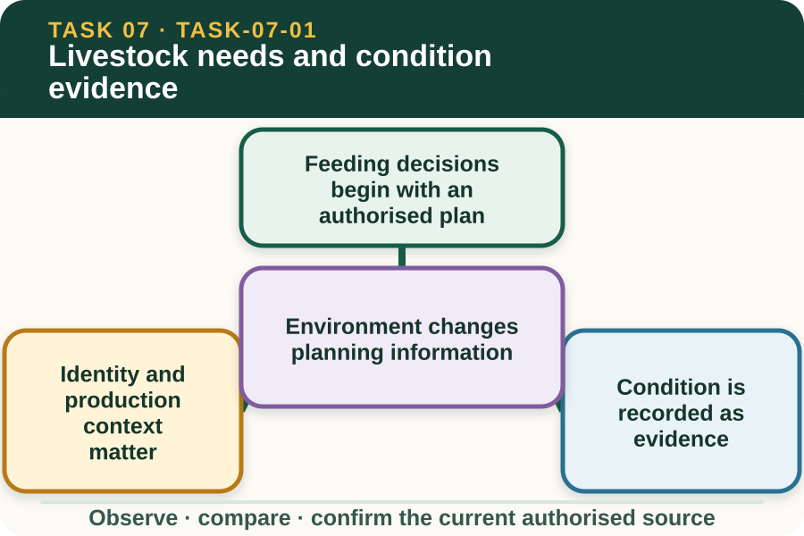

Classroom presentation · 8 slides
Livestock needs and condition evidence
Task 7 · 1 of 8
Livestock needs and condition evidence
Connect life stage, production context, condition and environment to the information a feeding plan needs.

Speaker notes
Teaching move (web-deck purpose): Use the module visual and the fictional worked example to move students from observation to a source-led decision. Ask students to name the evidence, the authority gap and the next safe communication step. Misconception and help: The website teaches plan literacy; only current approved sources control feeding work. Choose the source tied to the real group, revision and supervisor. Applied action: Audit the inputs to a feeding plan. Using fictional teacher-provided records, match group identity, plan revision, condition entry and environment note. Flag any mismatch and write the question an authorised supervisor must answer. Do not design or alter a feeding plan. Boundary: This supplementary learning draws on mapped AHCLSK229 concepts. Current signed TAS and RTO documents control cohort delivery, assessment and competency decisions; current workplace procedures, supervision and authorised sources control real work. [Sources] - Source basis: AHCLSK229 Release 1 preparation requirements for condition, health, feed, water and the approved feeding plan, supported by authorised livestock focus-area concepts. Current livestock expertise, enterprise plans and supervisor directions control every real requirement and adjustment. - Visual visual-task-07-01: Generated locally from accepted Stage 05 module headings; no external image copied. - Course visual manifest: work/pi/visuals/visual-manifest.json
Task 7 · 2 of 8
Map the learning
- Feeding decisions begin with an authorised plan
- Identity and production context matter
- Condition is recorded as evidence
Retrieve: Which source controls what a real livestock group is provided?
Speaker notes
Teaching move (learning map): Use the module visual and the fictional worked example to move students from observation to a source-led decision. Ask students to name the evidence, the authority gap and the next safe communication step. Misconception and help: The website teaches plan literacy; only current approved sources control feeding work. Choose the source tied to the real group, revision and supervisor. Applied action: Audit the inputs to a feeding plan. Using fictional teacher-provided records, match group identity, plan revision, condition entry and environment note. Flag any mismatch and write the question an authorised supervisor must answer. Do not design or alter a feeding plan. Boundary: This supplementary learning draws on mapped AHCLSK229 concepts. Current signed TAS and RTO documents control cohort delivery, assessment and competency decisions; current workplace procedures, supervision and authorised sources control real work. [Sources] - Source basis: AHCLSK229 Release 1 preparation requirements for condition, health, feed, water and the approved feeding plan, supported by authorised livestock focus-area concepts. Current livestock expertise, enterprise plans and supervisor directions control every real requirement and adjustment. - Visual visual-task-07-01: Generated locally from accepted Stage 05 module headings; no external image copied. - Course visual manifest: work/pi/visuals/visual-manifest.json
Task 7 · 3 of 8
Notice the evidence
Feeding decisions begin with an authorised plan
AHCLSK229 requires feed and feed supplements to be prepared and provided according to a feeding plan. The plan translates current livestock, enterprise and professional information into instructions for the actual group and conditions.
A learner reads and follows the approved plan within supervision. This website can explain the information categories that support a plan, but it cannot create a ration or decide a real feeding requirement.
Identity and production context matter
A feeding record needs the correct animal or group identifier, life-stage or production context used by the enterprise, date and current plan revision. These fields prevent information being applied to the wrong group.
When identifiers or plan details conflict, the learner should not select the most plausible entry. Mark the conflict and obtain confirmation from the authorised supervisor before the plan is used.
Speaker notes
Teaching move (theory idea 1): Use the module visual and the fictional worked example to move students from observation to a source-led decision. Ask students to name the evidence, the authority gap and the next safe communication step. Misconception and help: The website teaches plan literacy; only current approved sources control feeding work. Choose the source tied to the real group, revision and supervisor. Applied action: Audit the inputs to a feeding plan. Using fictional teacher-provided records, match group identity, plan revision, condition entry and environment note. Flag any mismatch and write the question an authorised supervisor must answer. Do not design or alter a feeding plan. Boundary: This supplementary learning draws on mapped AHCLSK229 concepts. Current signed TAS and RTO documents control cohort delivery, assessment and competency decisions; current workplace procedures, supervision and authorised sources control real work. [Sources] - Source basis: AHCLSK229 Release 1 preparation requirements for condition, health, feed, water and the approved feeding plan, supported by authorised livestock focus-area concepts. Current livestock expertise, enterprise plans and supervisor directions control every real requirement and adjustment. - Visual visual-task-07-01: Generated locally from accepted Stage 05 module headings; no external image copied. - Course visual manifest: work/pi/visuals/visual-manifest.json
Task 7 · 4 of 8
Use the source boundary
Condition is recorded as evidence
Condition evidence can include supervisor-approved scoring records, visible appearance, behaviour, movement and changes in eating or drinking patterns. The method and meaning come from current authorised sources.
Learners should not create a score from a photograph or make a nutrition diagnosis. They can compare existing authorised entries, describe visible change and report information that the plan reviewer may need.
Environment changes planning information
Weather, water observations, work activity, housing or paddock conditions and feed access can affect the information reviewed before feeding. A change may mean the current plan needs authorised reconsideration.
The learner records the changed condition and checks whether the plan revision, group and date still match. Any adjustment to quantities, timing, feed type or supplements remains an authorised decision.
Speaker notes
Teaching move (theory idea 2): Use the module visual and the fictional worked example to move students from observation to a source-led decision. Ask students to name the evidence, the authority gap and the next safe communication step. Misconception and help: The website teaches plan literacy; only current approved sources control feeding work. Choose the source tied to the real group, revision and supervisor. Applied action: Audit the inputs to a feeding plan. Using fictional teacher-provided records, match group identity, plan revision, condition entry and environment note. Flag any mismatch and write the question an authorised supervisor must answer. Do not design or alter a feeding plan. Boundary: This supplementary learning draws on mapped AHCLSK229 concepts. Current signed TAS and RTO documents control cohort delivery, assessment and competency decisions; current workplace procedures, supervision and authorised sources control real work. [Sources] - Source basis: AHCLSK229 Release 1 preparation requirements for condition, health, feed, water and the approved feeding plan, supported by authorised livestock focus-area concepts. Current livestock expertise, enterprise plans and supervisor directions control every real requirement and adjustment. - Visual visual-task-07-01: Generated locally from accepted Stage 05 module headings; no external image copied. - Course visual manifest: work/pi/visuals/visual-manifest.json
Task 7 · 5 of 8
Connect evidence to action
Water evidence belongs in the picture
AHCLSK229 includes checking water supply, quality and quantity against livestock requirements. Learners may observe and record current source fields, visible concerns or interruptions while staying within the approved task.
The website supplies no species water requirement or water-quality threshold. Current enterprise, laboratory, livestock and professional sources control suitability, monitoring expectations and any authorised workplace response.
Good questions support authorised decisions
Useful clarification questions identify the group, plan version, observation, missing field and decision needed. They avoid presenting a preferred ration or supplement as if it were approved advice.
Saved responses are fictional planning rehearsal. They do not replace the feeding plan, enterprise condition record, supervised practical work or evidence assessed through the RTO's current process.
Speaker notes
Teaching move (theory idea 3): Use the module visual and the fictional worked example to move students from observation to a source-led decision. Ask students to name the evidence, the authority gap and the next safe communication step. Misconception and help: The website teaches plan literacy; only current approved sources control feeding work. Choose the source tied to the real group, revision and supervisor. Applied action: Audit the inputs to a feeding plan. Using fictional teacher-provided records, match group identity, plan revision, condition entry and environment note. Flag any mismatch and write the question an authorised supervisor must answer. Do not design or alter a feeding plan. Boundary: This supplementary learning draws on mapped AHCLSK229 concepts. Current signed TAS and RTO documents control cohort delivery, assessment and competency decisions; current workplace procedures, supervision and authorised sources control real work. [Sources] - Source basis: AHCLSK229 Release 1 preparation requirements for condition, health, feed, water and the approved feeding plan, supported by authorised livestock focus-area concepts. Current livestock expertise, enterprise plans and supervisor directions control every real requirement and adjustment. - Visual visual-task-07-01: Generated locally from accepted Stage 05 module headings; no external image copied. - Course visual manifest: work/pi/visuals/visual-manifest.json
Task 7 · 6 of 8
Retrieve and check
Which source controls what a real livestock group is provided?
- The current approved feeding plan and authorised workplace direction.
- A quantity remembered from a classroom example.
- The learner's personal estimate after looking at the group.
Teacher reveal
Correct. These sources connect current livestock information to enterprise instructions.
Choose the source tied to the real group, revision and supervisor.
Speaker notes
Teaching move (retrieval): Use the module visual and the fictional worked example to move students from observation to a source-led decision. Ask students to name the evidence, the authority gap and the next safe communication step. Misconception and help: The website teaches plan literacy; only current approved sources control feeding work. Choose the source tied to the real group, revision and supervisor. Applied action: Audit the inputs to a feeding plan. Using fictional teacher-provided records, match group identity, plan revision, condition entry and environment note. Flag any mismatch and write the question an authorised supervisor must answer. Do not design or alter a feeding plan. Boundary: This supplementary learning draws on mapped AHCLSK229 concepts. Current signed TAS and RTO documents control cohort delivery, assessment and competency decisions; current workplace procedures, supervision and authorised sources control real work. [Sources] - Source basis: AHCLSK229 Release 1 preparation requirements for condition, health, feed, water and the approved feeding plan, supported by authorised livestock focus-area concepts. Current livestock expertise, enterprise plans and supervisor directions control every real requirement and adjustment. - Visual visual-task-07-01: Generated locally from accepted Stage 05 module headings; no external image copied. - Course visual manifest: work/pi/visuals/visual-manifest.json Use option-specific feedback after the learner commits to an answer.
Task 7 · 7 of 8
Construct a source-led response
Review a fictional livestock condition summary and explain which identity, context and plan-version information must be confirmed before authorised feeding work.
- The identified group and context are…
- The authorised condition evidence shows…
- The environmental change is…
- The plan-version conflict or gap is…
- I would report this to…
- The authorised decision required is…
Success criteria
- Uses traceable identity and plan-version information
- Describes condition and context without diagnosis
- Does not suggest a ration, rate or supplement
- Keeps every plan change with the authorised role
Speaker notes
Teaching move (guided written response): Use the module visual and the fictional worked example to move students from observation to a source-led decision. Ask students to name the evidence, the authority gap and the next safe communication step. Misconception and help: The website teaches plan literacy; only current approved sources control feeding work. Choose the source tied to the real group, revision and supervisor. Applied action: Audit the inputs to a feeding plan. Using fictional teacher-provided records, match group identity, plan revision, condition entry and environment note. Flag any mismatch and write the question an authorised supervisor must answer. Do not design or alter a feeding plan. Boundary: This supplementary learning draws on mapped AHCLSK229 concepts. Current signed TAS and RTO documents control cohort delivery, assessment and competency decisions; current workplace procedures, supervision and authorised sources control real work. [Sources] - Source basis: AHCLSK229 Release 1 preparation requirements for condition, health, feed, water and the approved feeding plan, supported by authorised livestock focus-area concepts. Current livestock expertise, enterprise plans and supervisor directions control every real requirement and adjustment. - Visual visual-task-07-01: Generated locally from accepted Stage 05 module headings; no external image copied. - Course visual manifest: work/pi/visuals/visual-manifest.json
Task 7 · 8 of 8
Close the loop
Audit the inputs to a feeding plan
Using fictional teacher-provided records, match group identity, plan revision, condition entry and environment note. Flag any mismatch and write the question an authorised supervisor must answer. Do not design or alter a feeding plan.
- Name the strongest evidence in the scenario.
- Explain the decision or referral it supports.
- State which current source or authorised person controls real work.
Boundary: This supplementary learning draws on mapped AHCLSK229 concepts. Current signed TAS and RTO documents control cohort delivery, assessment and competency decisions; current workplace procedures, supervision and authorised sources control real work.
Speaker notes
Teaching move (exit and application): Use the module visual and the fictional worked example to move students from observation to a source-led decision. Ask students to name the evidence, the authority gap and the next safe communication step. Misconception and help: The website teaches plan literacy; only current approved sources control feeding work. Choose the source tied to the real group, revision and supervisor. Applied action: Audit the inputs to a feeding plan. Using fictional teacher-provided records, match group identity, plan revision, condition entry and environment note. Flag any mismatch and write the question an authorised supervisor must answer. Do not design or alter a feeding plan. Boundary: This supplementary learning draws on mapped AHCLSK229 concepts. Current signed TAS and RTO documents control cohort delivery, assessment and competency decisions; current workplace procedures, supervision and authorised sources control real work. [Sources] - Source basis: AHCLSK229 Release 1 preparation requirements for condition, health, feed, water and the approved feeding plan, supported by authorised livestock focus-area concepts. Current livestock expertise, enterprise plans and supervisor directions control every real requirement and adjustment. - Visual visual-task-07-01: Generated locally from accepted Stage 05 module headings; no external image copied. - Course visual manifest: work/pi/visuals/visual-manifest.json